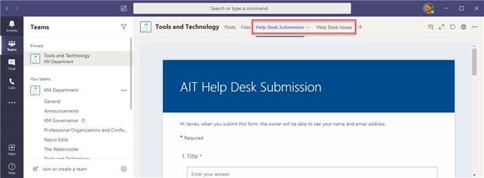

Open the Knowledge Management Help Desk
The Knowledge Management Help Desk is a resource where you can request assistance with any of the tools or processes used by the Knowledge Management department. For example, you can submit a request if you're having trouble with something in Author-it or need help in Teams.
The help desk is also a tool that the site administrators use to gather information about knowledge gaps and areas where they can provide more learning opportunities. If you contact an administrator directly about a problem, you'll be directed to submit a help desk request so the administrators can gather more accurate analytics.
The links to submit a request and to view your request are tabs at the top of the Tools and Technology channel. The following graphic shows the tabs in the Tools and Technology channel.

When you select the Help Desk Submission tab, a form opens where you enter the following information:
|
Field |
Description |
|---|---|
|
Title |
The title of the issue. Make sure the title is descriptive of the problem or request. |
|
Description |
A description of the problem or request. Use this field to provide as much detail as possible. If the issue is with Author-it, be sure to include all of the relevant Author-it object IDs. If you share a file, include the name of the file in this field. |
|
Priority |
Identify the urgency of the problem or request. If the problem is keeping you from doing your job, select High and an administrator will respond to your request as soon as possible. There may be a short delay in the response times for Normal or Low priority submissions but an administrator will typically respond within a day or two. |
|
Category |
The type of problem or request. Choose from the following:
|
|
Output Medium |
The output where the problem or request is presenting itself. Choose from the following:
|
After you submit a request, you can view it and any other requests that have been submitted. When you open the list of submitted issues, you can do the following:
Edit your issue
Add an attachment to your issue
Close your issue
Submit or view a request
Complete the following to work with the Knowledge Management Help Desk:
To submit an issue, do the following:
In the Tools and Technology channel, click the Help Desk Submission tab.
Complete the form and click Submit.
To view an issue, in the Tools and Technology channel, click the Help Desk Issues tab.
(Optional) To edit your issue, do the following:
Locate your issue in the list.
Hover over the issue and select the radio button at the left.
Click the Edit menu at the top of the window. The edit pane opens.
In the Edit pane, make your changes to the issue.
Click Save.
(Optional) To include a file with an issue, do the following:
In the Tools and Technology channel, click the Files tab.
Click the KM Help Desk File Area folder.
Drag and drop your file into the folder.
Update the issue with the name of the file.
(Optional) Click the ellipsis next to the file, select Copy link, select Copy, and paste the link in the issue.
(Optional) To close your issue, do the following:
Open the Edit pane for the issue.
Select Close in the Issue Status drop-down list.